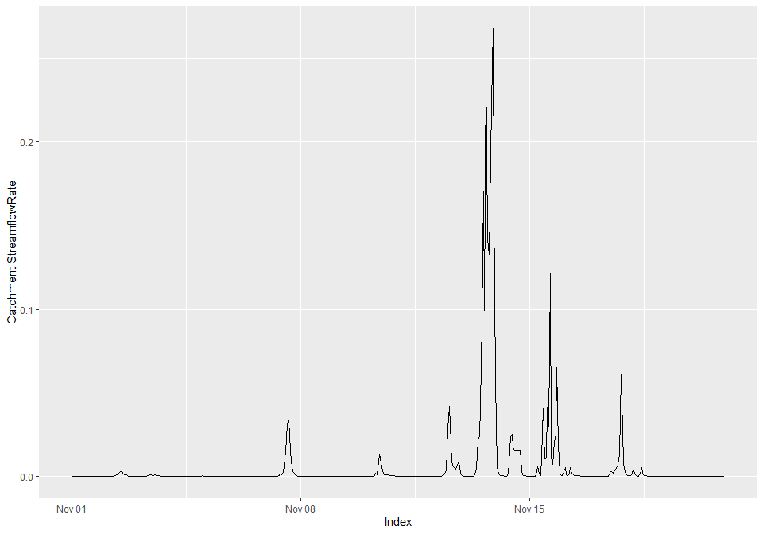
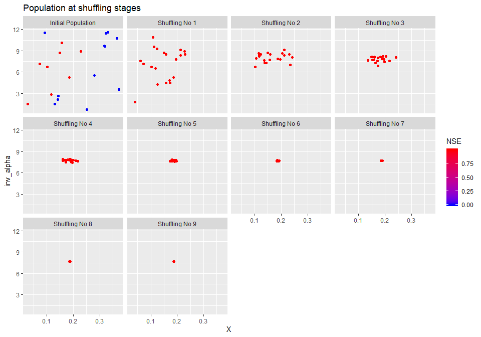
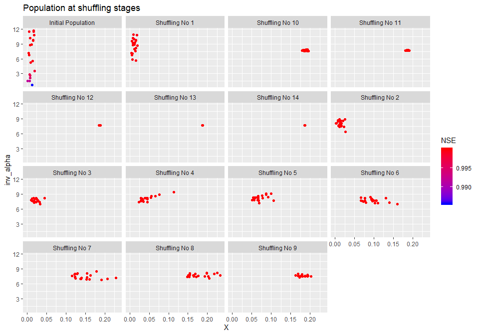
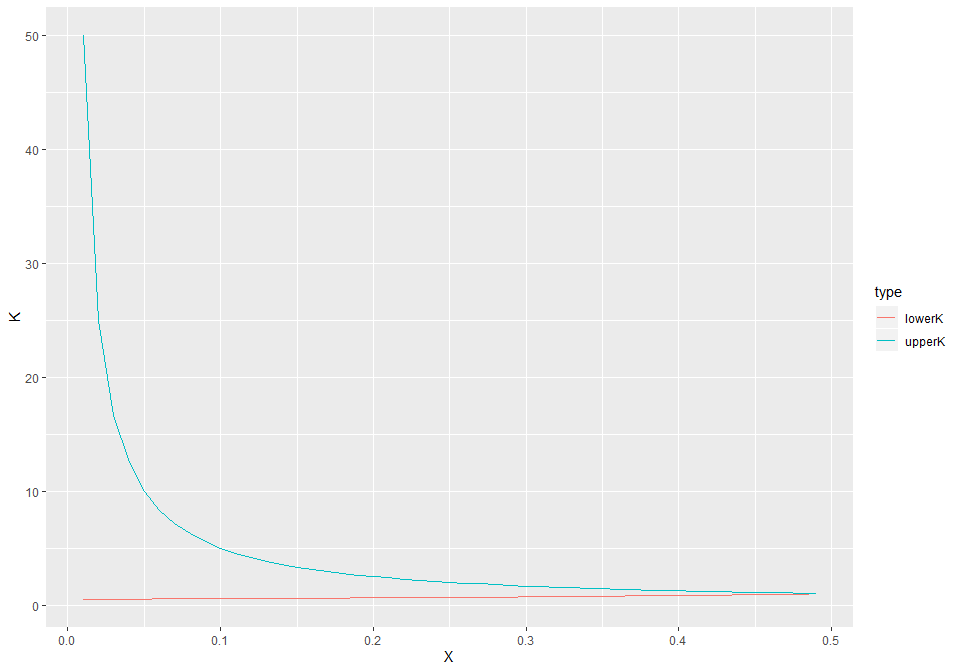
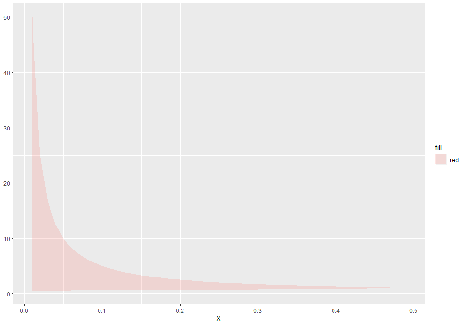
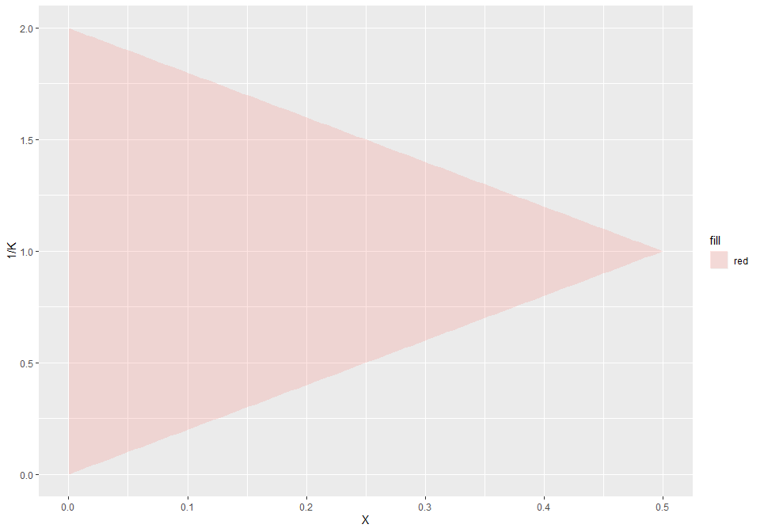
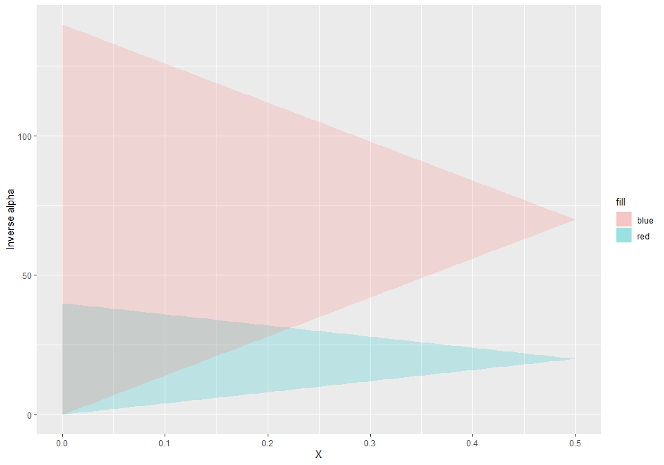
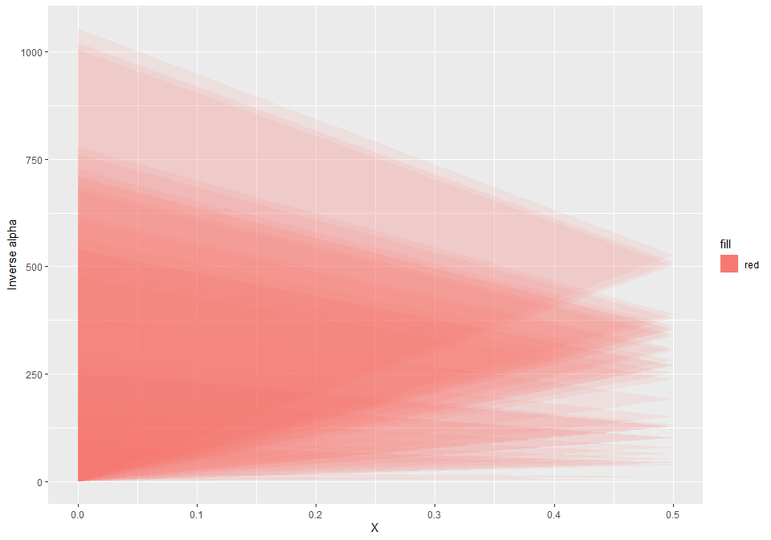
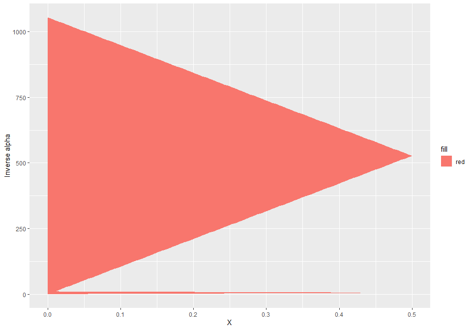
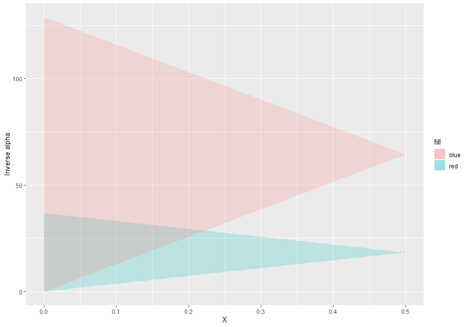

Linear Muskingum channel routing model - constrained subcatchment calibration ================ Jean-Michel Perraud 2020-01-28
Linear Muskingum channel routing model - constrained subcatchment calibration
Purpose
This vignette focuses on explaining how to calibrate the linear version of Muskingum jointly across river reaches, respecting stability constraints across all these reaches. The second part of the document is an indepth explanation of the scheme that is also used as a reference for unit testing swift.
Guidelines for global calibration of Muskingum constrainted parameters
library(ggplot2)
library(tidyr)
library(dplyr)
library(readr)
library(swift)
library(mhplot)
library(DiagrammeR)For this example we will use data derived from the South Esk catchment in Tasmania.
We load and configure the model simulation in the next section, without detailed explanation; please read other introductory vignettes if this is unclear.
modelId <- 'GR4J'
siteId <- 'South_Esk'
simulation <- sampleCatchmentModel(siteId=siteId, configId='catchment')
simulation <- swapModel(simulation, 'MuskingumNonLinear', 'channel_routing')
# # revert back to derfautl values as expected from sample simulation..
# sc <- 1 # reach slope in m/m
# n <- 1 # default Manning's parameter value for the reach
# f <- 1 # "Fudge factor" to allow for a different range of Alpha values.
# oneHour <- 1
# delt <- oneHour
seClimate <- sampleSeries(siteId=siteId, varName='climate')
seFlows <- sampleSeries(siteId=siteId, varName='flow')
playInput(simulation, seClimate)
setSimulationSpan(simulation, start(seClimate), end(seClimate))
setSimulationTimeStep(simulation, 'hourly')
configureHourlyGr4j(simulation)We can get a topologic view of the model setup (albeit crowded as this is a fairly large catchment).
(Note: may not render yet through GitHub)
DiagrammeR(GetCatchmentDOTGraph_R(simulation))We cookie cut to get a subcatchment near the headwaters.
subsim <- subsetCatchment(simulation, 'node.5')
DiagrammeR(GetCatchmentDOTGraph_R(subsim))We configure the routing scheme to be linear (parameter N set and fixed to 1)
linkIds <- mkFullDataId('link', getLinkIds(subsim))
setStateValue(subsim, mkFullDataId(linkIds, 'N'), rep(1.0, length(linkIds)))Let’s have a look at the link properties and other default routing parameters
lnkpnames <- c('Length', 'f', 'ManningsN', 'Slope', 'N', 'X', 'Alpha')
getStateValue(subsim,mkFullDataId('link.1', lnkpnames))## link.1.Length link.1.f link.1.ManningsN link.1.Slope
## 6.140000e+03 1.000000e+00 1.000000e+00 1.000000e+00
## link.1.N link.1.X link.1.Alpha
## 1.000000e+00 6.952873e-310 6.952873e-310X is between 0 and 0.5, without stability constraints. Setting a default Alpha is… trickier.
setStateValue(subsim, mkFullDataId(linkIds, 'X'), rep(1e-6, length(linkIds)))
setStateValue(subsim, mkFullDataId(linkIds, 'Alpha'), rep(0.0005, length(linkIds)))If we look at the subcatchment outflow in this configuration, it is a series of unfeasible values - at least one link was in an unfeasible zone for (Alpha, X)
varId <- 'Catchment.StreamflowRate'
catOutflowId <- 'subarea.1.OutflowRate'
recordState(subsim,varId)
recordState(subsim,catOutflowId)
execSimulation(subsim)
someFlow <- getRecorded(subsim, varId)
summary(someFlow)## Index Catchment.StreamflowRate
## Min. :2010-11-01 00:00:00 Min. :-19998
## 1st Qu.:2010-11-05 23:45:00 1st Qu.:-19998
## Median :2010-11-10 23:30:00 Median :-19998
## Mean :2010-11-10 23:30:00 Mean :-19998
## 3rd Qu.:2010-11-15 23:15:00 3rd Qu.:-19998
## Max. :2010-11-20 23:00:00 Max. :-19998We can double-check that the subarea does produce runoff yield; the links are where the model does not work yet.
summary(getRecorded(subsim, catOutflowId))## Index subarea.1.OutflowRate
## Min. :2010-11-01 00:00:00 Min. :0.000e+00
## 1st Qu.:2010-11-05 23:45:00 1st Qu.:5.000e-08
## Median :2010-11-10 23:30:00 Median :8.170e-07
## Mean :2010-11-10 23:30:00 Mean :7.353e-04
## 3rd Qu.:2010-11-15 23:15:00 3rd Qu.:8.327e-06
## Max. :2010-11-20 23:00:00 Max. :1.701e-02So, given that each routing link parameters Alpha and X are subject to constraint that vary depending on ‘Length’, ‘f’, ‘ManningsN’, ‘Slope’, how do we get a pair (Alpha, X) that globaly respect these constraints? This is not complex science but complicated enough to get wrong.
‘swift’ offers facilities to remove the error prone tedium. First, feasibleMuskingumBounds lists the extremas of the feasible (Alpha, X) parameter space.
(akbounds <- swift::feasibleMuskingumBounds(subsim, 1))## min_alpha max_x alpha_for_max_x
## 0.08143322 0.37382040 0.13004771The numbers above can play a crucial role when setting up an optimizer for this model; more on this soon.
oneHour <- 1
pSpecMusk <- data.frame(
Name = c('X', 'Alpha'),
Value = c( akbounds['max_x'] / 2, akbounds['alpha_for_max_x']),
Min= c(1.0E-06, akbounds['min_alpha']),
Max = c(akbounds['max_x'], 1e5),
stringsAsFactors=FALSE
)
# Basic parameterizer
pzm <- function(simulation, pSpecs=pSpecMusk) {
akbounds <- swift::feasibleMuskingumBounds(simulation, 1)
p_musk <- createParameterizer('generic links',pSpecs);
p_musk
}
# Wrapper parameterizer, with constraints added around.
pzc <- function(simulation, pSpecs=pSpecMusk) {
p_musk <- pzm(simulation, pSpecs)
p_musk_c <- createMuskingumParamConstraints(p_musk, deltaT=oneHour, "Alpha", "X", simulation)
p_musk_c
}
pp <- parameterizerAsDataFramepp(pzm(subsim))## Name Min Max Value
## 1 X 0.00000100 3.738204e-01 0.1869102
## 2 Alpha 0.08143322 1.000000e+05 0.1300477p <- pzc(subsim)
pp(p)## Name Min Max Value
## 1 X 0.0000010 0.3738204 0.1869102
## 2 Alpha 0.1001528 0.2600954 0.1300477Let’s get a trace of the subcatchment outflow, as a synthetic data to calibrated against.
applySysConfig(p, subsim)
execSimulation(subsim)
someFlow <- getRecorded(subsim, varId)
summary(someFlow)## Index Catchment.StreamflowRate
## Min. :2010-11-01 00:00:00 Min. :0.000e+00
## 1st Qu.:2010-11-05 23:45:00 1st Qu.:8.700e-07
## Median :2010-11-10 23:30:00 Median :8.688e-05
## Mean :2010-11-10 23:30:00 Mean :6.165e-03
## 3rd Qu.:2010-11-15 23:15:00 3rd Qu.:6.350e-04
## Max. :2010-11-20 23:00:00 Max. :2.683e-01We do now get a valid outflow since (Alpha-K) respects feasibility constraints on all links.
autoplot(someFlow)
Setting up calibration
pSpecMaxBounds <- data.frame(
Name = c('X', 'Alpha'),
Value = c(1.0E-6, akbounds['alpha_for_max_x']), # IMPORTANT to use these values.
Min= c(1.0E-6, akbounds['min_alpha']),
Max = c(akbounds['max_x'], 1e6), # Alpha_max can get very large.
stringsAsFactors=FALSE
)
pp(pzc(subsim, pSpecMaxBounds))## Name Min Max Value
## 1 X 0.00000100 3.738204e-01 0.0000010
## 2 Alpha 0.08143331 4.861449e+04 0.1300477If we were to use another (X, Alpha) point e.g. X=0.1869102, the feasible bounds for Alpha change drastically. If an optimizer samples this for an initial population of points (SCE), this is unnecessarily restrictive for Alpha. Many hydrological calibration schemes were designed without consideration on feasible space that are not hypercubes.
pp(pzc(subsim, pSpecMusk))## Name Min Max Value
## 1 X 0.0000010 0.3738204 0.1869102
## 2 Alpha 0.1001528 0.2600954 0.1300477While calibrating in the (Alpha,X) space is possible, perhaps preferable in some cases, (1/Alpha,X) has a triangular shaped feasibility region that may be easier to handle for optimizers that work with geometric transformation in the parameter space (SCE). Swift can add this on top of the constrained calibration:
# (X, 1/Alpha) parametrizer with dynamically constrained min/max bounds.
pzer_inv <- function(simulation, pSpecs=pSpecMusk) {
p_musk_c <- pzc(simulation, pSpecs)
p_musk_inv_a <- wrapTransform(p_musk_c)
addTransform(p_musk_inv_a, 'inv_alpha', 'Alpha', '1/x')
p_musk_inv_a
}
p <- pzer_inv(subsim, pSpecMaxBounds)
pp(p)## Name Min Max Value
## 1 inv_alpha 2.057e-05 12.2799877 7.689486
## 2 X 1.000e-06 0.3738204 0.000001We check that backtransforming to (Alpha-X) works:
pp(backtransform(p))## Name Min Max Value
## 1 X 0.00000100 3.738204e-01 0.0000010
## 2 Alpha 0.08143331 4.861449e+04 0.1300477objectiveId <- 'NSE'
objective <- createObjective(subsim, varId, observation=someFlow, objectiveId, start(someFlow), end(someFlow))score <- getScore(objective,p)
score## $scores
## NSE
## 0.9997748
##
## $sysconfig
## Name Min Max Value
## 1 inv_alpha 2.057e-05 12.2799877 7.689486
## 2 X 1.000e-06 0.3738204 0.000001#termination <- swift::CreateSceMaxRuntimeTerminationWila_R(1/60)
termination <- swift::CreateSceTerminationWila_Pkg_R('relative standard deviation', c('0.001','0.0167'))
sceParams <- getDefaultSceParameters()
npars <- 2
sceParams <- SCEParameters(npars)
optimizer <- createSceOptimSwift(objective,terminationCriterion = termination, populationInitializer = p,SCEpars = sceParams)
calibLogger <- setCalibrationLogger(optimizer,"dummy")
optimStartTime <- lubridate::now();
calibResults <- executeOptimization(optimizer)
optimEndTime <- lubridate::now();
optimWallClock <- lubridate::as.duration(lubridate::interval(optimStartTime, optimEndTime))
optimWallClock## [1] "0.209973812103271s"optLog <- extractOptimizationLog(optimizer, fitnessName = "NSE")
geomOps <- optLog$geomOps
shuffleLogs <- mhplot::subsetByCategory(optLog$data, pattern = "Initial.*|Shuffling.*")
mhplot::plotShuffles(shuffleLogs, 'X', 'inv_alpha', objLims = (0:1))
sortedResults <- sortByScore(calibResults, 'NSE')
head(scoresAsDataFrame(sortedResults))## NSE inv_alpha X
## 1 1 7.688320 0.1871205
## 2 1 7.687345 0.1867482
## 3 1 7.686741 0.1869934
## 4 1 7.693171 0.1868937
## 5 1 7.693687 0.1868359
## 6 1 7.693877 0.1869150q <- getBestScore(calibResults, 'NSE', FALSE)
q <- GetSystemConfigurationWila_R(q)
pp(q)## Name Min Max Value
## 1 inv_alpha 3.849069 9.9821603 7.6883204
## 2 X 0.000001 0.3737638 0.1871205pp(backtransform(q))## Name Min Max Value
## 1 X 0.0000010 0.3737638 0.1871205
## 2 Alpha 0.1001787 0.2598031 0.1300674Seeding the optimisation point population with restrictive constraint bounds
This section is a counter-example. Do not do this.
Say, instead of seeding with alpha set to alpha_for_x_max (0.37382040) we instead use a value cloase to its global minimum, 0.083:
pSpecRestrictiveBounds <- pSpecMaxBounds
pSpecRestrictiveBounds$Value[2] <- 0.083
pSpecRestrictiveBounds## Name Value Min Max
## X 1.0e-06 0.00000100 3.738204e-01
## alpha_for_max_x Alpha 8.3e-02 0.08143322 1.000000e+06p <- pzer_inv(subsim, pSpecRestrictiveBounds)
pp(p)## Name Min Max Value
## 1 inv_alpha 2.057e-05 12.27998772 12.048193
## 2 X 1.000e-06 0.01887681 0.000001X is now much more constrained in its feasible range, and initializing a population fails to cover large sections of the feasible triangle. If used in the optimizer (uniform random sampling)
termination <- swift::CreateSceTerminationWila_Pkg_R('relative standard deviation', c('0.001','0.0167'))
sceParams <- getDefaultSceParameters()
npars <- 2
sceParams <- SCEParameters(npars)
optimizer <- createSceOptimSwift(objective,terminationCriterion = termination, populationInitializer = p,SCEpars = sceParams)
calibLogger <- setCalibrationLogger(optimizer,"dummy")
calibResults <- executeOptimization(optimizer)library(mhplot)
optLog <- extractOptimizationLog(optimizer, fitnessName = "NSE")
geomOps <- optLog$geomOps
shuffleLogs <- mhplot::subsetByCategory(optLog$data, pattern = "Initial.*|Shuffling.*")
mhplot::plotShuffles(shuffleLogs, 'X', 'inv_alpha', objLims = (0:1)) SCE does manage to converge towards the optimum, but it takes a larger number of iterations. Anecdotally, we observed cases where the calibration does fail to go near the optimum, when interplaying with a convergence criterion configured for “leniency”.
Detailed explanation and unit test design
Default values for properties defining the relationship between Alpha and K (Muskingum-Cunge?)
L_d <- 1000 # reach lengh in metres
sc_d <- 1e-2 # reach slope in m/m
n_d <- 1 # default Manning's parameter value for the reach
f_d <- 1 # "Fudge factor" to allow for a different range of Alpha values.
alpha_d <- 0.2 # Alpha parameter from which K is derived along with reach properties
X_d <- 0.3 # attenuation (weighting) factor
oneHour <- 1
K_d <- 2.0 For the case of a linear sub-case (exponent N=1.0 in the storage/outflow relationship) we can analytically solve the system of storage-outflow relationships and get C1, C2, C3, coefficients
getDenom <- function(K, X, delta_t=oneHour) {
(2*K*(1-X) + delta_t)
}
getC1 <- function(K, X, delta_t=oneHour) {
(delta_t - 2*K*X) / getDenom(K, X, delta_t)
}
getC2 <- function(K, X, delta_t=oneHour) {
(delta_t + 2*K*X) / getDenom(K, X, delta_t)
}
getC3 <- function(K, X, delta_t=oneHour) {
(2*K*(1-X) - delta_t) / getDenom(K, X, delta_t)
}
linearMuskingum <- function(inflow, prevOutflow=0, prevInflow=0, K=oneHour, X=0.5) {
getC1(K,X)*inflow + getC2(K,X)*prevInflow + getC3(K,X)*prevOutflow
}We define functions that relate K, alpha and other reach properties, that we will use later for plotting feasible bounds.
# Gets the factor G in the relationship K = G * Alpha
getKNoAlpha <- function(f=f_d, n=n_d, sc=sc_d, L=L_d) {
f * n * (L/1000) / sqrt(sc) # NOTE: (L/1000 to match the swift implementation)
}
# relationship K = G * Alpha
getK <- function(alpha=alpha_d, f=f_d, n=n_d, sc=sc_d, L=L_d) {
alpha * getKNoAlpha(f=f, n=n, sc=sc, L=L)
}
# relationship Alpha = K / F
getAlpha <- function(K=K_d, f=f_d, n=n_d, sc=sc_d, L=L_d) {
K / getKNoAlpha(f=f, n=n, sc=sc, L=L)
}
# relationship 1/Alpha = G / K
getInvAlpha <- function(K=K_d, f=f_d, n=n_d, sc=sc_d, L=L_d) {
1 / getAlpha(K=K, f=f, n=n, sc=sc, L=L)
}Constraints on the Linear (N=1) case of Muskingum parameters
It can be shown that given the following constraints must be satisfied to be in a stability zone (no negative outflows):
- K < delta_t / (2 * X)
- K > delta_t / (2 * (1 - X))
We can derive the following functions defining the feasible boundaries for the triplet X, K, delta_t, (and Alpha by proxy from K).
upperKValue <- function(X, delta_t=oneHour) {
delta_t / (2*X)
}
lowerKValue <- function(X, delta_t=oneHour) {
delta_t / (2*(1-X))
}
upperInvKValue <- function(X, delta_t=oneHour) {
(2*(1-X)) / delta_t
}
lowerInvKValue <- function(X, delta_t=oneHour) {
2*X / delta_t
}
upperXValue <- function(K, delta_t=oneHour) {
min( 1 - delta_t / (2*K) , delta_t / (2*K) )
}
upperXValueFromAlpha <- function(alpha=alpha_d, f=f_d, n=n_d, sc=sc_d, L=L_d, delta_t=oneHour) {
upperXValue(getK(alpha = alpha, f=f, n=n, sc=sc, L=L), delta_t=delta_t)
}
getFeasibleKInterval <- function(X=X_d, delta_t=oneHour) {
c(lowerKValue(X, delta_t), upperKValue(X, delta_t))
}
getFeasibleAlphaInterval <- function(f=f_d, n=n_d, sc=sc_d, L=L_d, X=X_d, delta_t=oneHour) {
G <- getKNoAlpha(f=f, n=n, sc=sc, L=L)
# K = G * Alpha
getFeasibleKInterval(X, delta_t)/G
}
getFeasibleInverseAlphaInterval <- function(f=f_d, n=n_d, sc=sc_d, L=L_d, X=X_d, delta_t=oneHour) {
rev(1 / getFeasibleAlphaInterval(f, n, sc, L, X, delta_t))
}
getFeasibleTimestepInterval <- function(alpha=alpha_d, f=f_d, n=n_d, sc=sc_d, L=L_d, X=X_d) {
k <- getK(alpha, f, n, sc, L)
c(2 * k * X, k)
}Given a delta_t, plotting the upper and lower K for X:
Xvals <- seq(from=1e-2, to=0.49999, by=1e-2)
d <- tibble(
X=Xvals,
upperK=upperKValue(Xvals),
lowerK=lowerKValue(Xvals)
)
df <- d %>% gather(key='type', value='kbound', -X)
g <- ggplot(df, aes(x=X, y = kbound, color=type)) + geom_line() + ylab("K")
g
The feasible region is the area between these two curves:
ggplot(d) + ggplot2::geom_ribbon(ggplot2::aes(x=X, ymin=lowerK, ymax=upperK, fill='red'), alpha=0.2)
It is easier to work on the inverse of K on the Y axis, as the bounds become lines. We can also afford to visually go closer to X=0.
Xvals <- seq(from=1e-4, to=0.5-1e-4, length.out = 100)
d <- tibble(
X=Xvals,
upperK=upperKValue(Xvals),
lowerK=lowerKValue(Xvals)
)
d_inv_wide <- d %>%
transmute(X=X, upperInvK = 1 / lowerK, lowerInvK = 1 / upperK )
d_inv <- d_inv_wide %>%
gather(key='type', value='kbound', -X)
ggplot(d_inv_wide) +
ggplot2::geom_ribbon(ggplot2::aes(x=X, ymin=lowerInvK, ymax=upperInvK, fill='red'), alpha=0.2) +
ylab("1/K")
So if we have two reaches of different lengths (or other properties), we can back transform the feasible Alpha regions for each reach and since since alpha is a linear function of X we visually get the following intersect of feasible regions.
getAlphaBounds <- function(L, f=f_d, n=n_d, sc=sc_d, delta_t=oneHour) {
d <- tibble(
X=Xvals,
upperK=upperKValue(Xvals, delta_t),
lowerK=lowerKValue(Xvals, delta_t)
)
d_alpha_one <- d %>%
transmute(X=X,
l_alpha = getAlpha(K=lowerK, f=f, n=n, sc=sc, L=L),
u_alpha = getAlpha(K=upperK, f=f, n=n, sc=sc, L=L))
d_alpha_one
}
inverseAlphaBounds <- function(d_alpha) {
d_alpha %>%
transmute(X=X, u_inv_alpha = 1 / l_alpha, l_inv_alpha = 1 / u_alpha )
}
d_alpha_one <- getAlphaBounds(L=2000)
d_alpha_two <- getAlphaBounds(L=7000)
d_inv_alpha_wide_one <- inverseAlphaBounds(d_alpha_one)
d_inv_alpha_wide_two <- inverseAlphaBounds(d_alpha_two)
ggplot() +
ggplot2::geom_ribbon(data=d_inv_alpha_wide_one, ggplot2::aes(x=X, ymin=l_inv_alpha, ymax=u_inv_alpha, fill='red'), alpha=0.2) +
ggplot2::geom_ribbon(data=d_inv_alpha_wide_two, ggplot2::aes(x=X, ymin=l_inv_alpha, ymax=u_inv_alpha, fill='blue'), alpha=0.2) +
ylab('Inverse alpha')
# See cpp unit test for
# in MNL algorithm constraint violated if ( (beta > delta_t / (2 * X) || beta < delta_t / (2 * (1 - X))Note that overall X is now constrained to be at most to be below 0.22 and the inverse of alpha from 0 to 12 at most (NOTE: visual shortcoming of previous plot, minimum X should be zero), if both reach are to be kept in their routing stablity zones.
Now consider a region the following set of reach properties:
library(readr)
# murray_nl <- readr::read_csv('c:/data/stsf/documentation/UpperMurray/node_link.csv')
murray_nl <- readr::read_csv(file.path(swift::sampleDataDir(), 'UpperMurray/node_link.csv'))## Parsed with column specification:
## cols(
## ID = col_double(),
## Name = col_character(),
## From = col_double(),
## To = col_double(),
## RainST = col_double(),
## EvapST = col_double(),
## Length = col_double(),
## Area = col_double(),
## Slope = col_double(),
## Frac_Urban = col_double(),
## Frac_Forest = col_double(),
## RLF = col_double(),
## Mann_n = col_double()
## )head(murray_nl)## # A tibble: 6 x 13
## ID Name From To RainST EvapST Length Area Slope Frac_Urban
## <dbl> <chr> <dbl> <dbl> <dbl> <dbl> <dbl> <dbl> <dbl> <dbl>
## 1 1 Suba~ 1 2 1 1 36320 2.24e8 1 0
## 2 2 Suba~ 2 3 2 2 15109 1.75e8 1 0
## 3 3 Suba~ 3 8 3 3 34340 4.88e8 1 0
## 4 4 Suba~ 4 5 4 4 51064 4.47e8 1 0
## 5 5 Suba~ 5 6 5 5 23819 4.37e8 1 0
## 6 6 Suba~ 6 7 6 6 33835 3.75e8 1 0
## # ... with 3 more variables: Frac_Forest <dbl>, RLF <dbl>, Mann_n <dbl>We note that only Length varies across reaches so we will ignore other reach parameters. Let’s overlay feasible regions for all reaches:
getFeasibleAlphaBounds <- function(reach_length) {
d_inv_alpha <- d %>%
transmute(X=X,
l_inv_alpha = getInvAlpha(lowerK, L=reach_length), # lower K --> upper invK --> thus upper invAlpha
u_inv_alpha = getInvAlpha(upperK, L=reach_length))
d_inv_alpha
}
reach_bounds <- lapply(murray_nl$Length, getFeasibleAlphaBounds)
g = ggplot()
for (b in reach_bounds) {
g <- g + ggplot2::geom_ribbon(data=b, ggplot2::aes(x=X, ymin=l_inv_alpha, ymax=u_inv_alpha, fill='red'), alpha=0.1)
}
g + ylab('Inverse alpha')
It is a bit crowded but you can intuit that the common area is quite small given the large difference in magnitude in the feasible triangles. Indeed, the extrema in reach lengths are two orders of magnitude different:
(length_range <- range(murray_nl$Length))## [1] 502 52731g = ggplot()
for (b in lapply(length_range, getFeasibleAlphaBounds)) {
g <- g + ggplot2::geom_ribbon(data=b, ggplot2::aes(x=X, ymin=l_inv_alpha, ymax=u_inv_alpha, fill='red'), alpha=1)
}
g + ylab('Inverse alpha')
Unit test design
sc <- 1.11e-2 # reach slope in m/m
n <- 0.98 # default Manning's parameter value for the reach
f <- 0.99 # "Fudge factor" to allow for a different range of Alpha values.
oneHour <- 1
delt <- oneHour
length_small <- 2000
length_large <- 7000
d_alpha_one <- getAlphaBounds(L=length_small, f, n, sc, delt)
d_alpha_two <- getAlphaBounds(L=length_large, f, n, sc, delt)
d_inv_alpha_wide_one <- inverseAlphaBounds(d_alpha_one)
d_inv_alpha_wide_two <- inverseAlphaBounds(d_alpha_two)
ggplot() +
ggplot2::geom_ribbon(data=d_inv_alpha_wide_one, ggplot2::aes(x=X, ymin=l_inv_alpha, ymax=u_inv_alpha, fill='red'), alpha=0.2) +
ggplot2::geom_ribbon(data=d_inv_alpha_wide_two, ggplot2::aes(x=X, ymin=l_inv_alpha, ymax=u_inv_alpha, fill='blue'), alpha=0.2) +
ylab('Inverse alpha')
inv_alpha <- 25
alpha <- 1/inv_alpha # Alpha parameter from which K is derived along with reach properties
X <- 0.1 # attenuation (weighting) factor
get_bounds <- function(L, X, alpha) {
alpha_bounds <- getFeasibleAlphaInterval(f, n, sc, L, X, delt)
inv_alpha_bounds <- getFeasibleInverseAlphaInterval (f, n, sc, L, X, delt)
up_X <- upperXValueFromAlpha(alpha, f, n, sc, L, delt)
data_frame(
l_alpha = alpha_bounds[1],
u_alpha = alpha_bounds[2],
l_inv_alpha = inv_alpha_bounds[1],
u_inv_alpha = inv_alpha_bounds[2],
u_x = up_X
)
}Given other link properties are the same but lengths, to get min and max G we only need:
min_G <- getKNoAlpha(f, n, sc, length_small)
max_G <- getKNoAlpha(f, n, sc, length_large)
(c(min_G, max_G))## [1] 18.41746 64.46112min_F <- 1/max_G
max_F <- 1/min_G
(c(min_F, max_F))## [1] 0.01551323 0.05429630delta_t <- 1.0
globalMinAlpha <- function(min_G, delta_t){
delta_t / ( 2 * min_G )
}
alphaForMaxX <- function(min_G, max_G, delta_t) {
delta_t / 2 * (min_G + max_G) / (min_G * max_G)
}
absMaxX <- function(min_G, max_G) {
min_G / (min_G + max_G)
}
# for unit test in swift\tests\api\parameterizers.cpp
x <- numeric(3)
x[1] <- absMaxX (min_G, max_G)
x[2] <- alphaForMaxX(min_G, max_G, delta_t)
x[3] <- globalMinAlpha(min_G, delta_t)
x## [1] 0.22222222 0.03490476 0.02714815get_bounds(length_small, X, alpha)## # A tibble: 1 x 5
## l_alpha u_alpha l_inv_alpha u_inv_alpha u_x
## <dbl> <dbl> <dbl> <dbl> <dbl>
## 1 0.0302 0.271 3.68 33.2 0.321get_bounds(length_large, X, alpha)## # A tibble: 1 x 5
## l_alpha u_alpha l_inv_alpha u_inv_alpha u_x
## <dbl> <dbl> <dbl> <dbl> <dbl>
## 1 0.00862 0.0776 12.9 116. 0.194overallFeasibleAlpha <- function(X) {
bounds_len_small <- getFeasibleAlphaInterval(f, n, sc, length_small, X, delta_t)
bounds_len_large <-getFeasibleAlphaInterval(f, n, sc, length_large, X, delta_t)
# smallest reach length (rather, smallest G) dictate the lower feasible alpha bound
# largest reach length (rather, smallest G) dictate the opper feasible alpha bound
c(bounds_len_small[1], bounds_len_large[2])
}
X <- 0.1
(alphaIntvx1 <- mean(overallFeasibleAlpha(X)))## [1] 0.05386538Lower X to give a larger feasible alpha, to test in swift that user-specified bounds override that.
X <- 0.05
(alphaIntvx2 <- mean(overallFeasibleAlpha(X)))## [1] 0.09185464(alphaTest <- (alphaIntvx1 + alphaIntvx2) /2)## [1] 0.07286001c(
upperXValueFromAlpha(alphaTest, f, n, sc, length_small),
upperXValueFromAlpha(alphaTest, f, n, sc, length_large)
)## [1] 0.3726070 0.1064591Non linear version of the routing
PLACEHOLDER
For N different from 1, we have a case of a non-linear storage-flow relationship.
inflow = 5
q <- 0:40Storage-outflow relationship:
sqRelation <- function(q, alpha=alpha_d, f=f_d, n=n_d, sc=sc_d, X=X_d, inflow=0, L=L_d, N=1) {
getK(alpha=alpha, f=f, n=n, sc=sc, L=L) * (X * q + (1-X)*inflow) ** N
}
rootEq <- function(q, alpha=alpha_d, f=f_d, n=n_d, sc=sc_d, X=X_d, inflow=0, L=L_d, N=1, dt=3600, prevOutflow=0, prevInflow=0) {
sqRelation(q, alpha, f, n, sc, X, inflow, L, N) - (inflow + prevInflow - q - prevOutflow) * dt / 2
}
derivEq <- function(q, alpha=alpha_d, f=f_d, n=n_d, sc=sc_d, X=X_d, inflow=0, L=L_d, N=1, dt=3600, prevOutflow=0, prevInflow=0) {
N*(1-X)*getK(alpha=alpha, f=f, n=n, sc=sc, L=L) * (X * q + (1-X)*inflow) ** (N-1) + dt / 2
}
n_power = 1.3
qplot(q, sqRelation(q, N=n_power, inflow=inflow), ylab='Storage(m3)', xlab='Outflow (m3/s)') + ggtitle('S = f(Q)')qplot(q, rootEq(q, N=n_power, inflow=inflow), ylab='Value', xlab='Outflow (m3/s)') + ggtitle('F(Q); root finding')qplot(q, derivEq(q, N=n_power, inflow=inflow), ylab='Value', xlab='Outflow (m3/s)') + ggtitle('DerivF(Q)')Using a solver to find the root.
library(rootSolve)
rootFun <- function(z, ...) {rootEq(z, ...)}
uniroot.all(rootFun, c(-10, 60))Given the default values for the parameters or constants in the routing formulation, the following example shows a case where the solution leads to negative outflows:
nlen <- 100
inflow <- rep(0,nlen)
inflow[4:9] <- c(10,20,15,10,5,3)
routeFlow <- function(rootEqFun, inflow, ...) {
nlen <- length(inflow)
outflow <- rep(0,nlen)
rootEqIndex <- function(z, i) { rootEqFun(z, inflow=inflow[i], prevOutflow=outflow[i-1], prevInflow=inflow[i-1], ...) }
for (i in 2:nlen) {
val <- uniroot.all(function(z) {rootEqIndex(z, i)}, c(0, 60))
stopifnot(length(val) == 1)
outflow[i] <- ifelse(length(val) == 1, val, NA)
}
outflow
}
routeSeries <- function(inflow, ...) {
nlen <- length(inflow)
outflow <- rep(0,nlen)
routeIndex <- function(i) { linearMuskingum(inflow=inflow[i], prevOutflow=outflow[i-1], prevInflow=inflow[i-1], ...) }
for (i in 2:nlen) {
outflow[i] <- routeIndex(i)
}
outflow
}
routeFlow(rootEq, inflow, alpha=0.1, N=1.001)
# q <- seq(from=0.01, to=0.011, length.out=50)
# qplot(, rootEqIndex(q,11), ylab='Value', xlab='Outflow (m3/s)') + ggtitle('DerivF(Q)')qplot(1:nlen, routeFlow(rootEq, inflow), xlab='time step', ylab='Outflow (m3/s)') + ggtitle('Outflow')Provenance
This document was generated from an R markdown file on 2020-01-28 10:56:27
sessionInfo()## R version 3.6.1 (2019-07-05)
## Platform: x86_64-w64-mingw32/x64 (64-bit)
## Running under: Windows 10 x64 (build 17763)
##
## Matrix products: default
##
## locale:
## [1] LC_COLLATE=English_Australia.1252 LC_CTYPE=English_Australia.1252
## [3] LC_MONETARY=English_Australia.1252 LC_NUMERIC=C
## [5] LC_TIME=English_Australia.1252
##
## attached base packages:
## [1] stats graphics grDevices utils datasets methods base
##
## other attached packages:
## [1] mhplot_0.5-1 stringr_1.4.0 readr_1.3.1 dplyr_0.8.3
## [5] tidyr_1.0.0 ggplot2_3.2.1 lubridate_1.7.4 DiagrammeR_1.0.1
## [9] swift_2.1.2 Rcpp_1.0.2 knitr_1.25 rmarkdown_1.16
##
## loaded via a namespace (and not attached):
## [1] mvtnorm_1.0-11 lattice_0.20-38 visNetwork_2.0.8
## [4] msvs_0.3.1 zoo_1.8-6 utf8_1.1.4
## [7] assertthat_0.2.1 zeallot_0.1.0 digest_0.6.21
## [10] R6_2.4.0 backports_1.1.4 evaluate_0.14
## [13] pillar_1.4.2 rlang_0.4.0 lazyeval_0.2.2
## [16] rstudioapi_0.10 labeling_0.3 webshot_0.5.1
## [19] downloader_0.4 htmlwidgets_1.3 igraph_1.2.4.1
## [22] munsell_0.5.0 compiler_3.6.1 influenceR_0.1.0
## [25] rgexf_0.15.3 xfun_0.9 pkgconfig_2.0.2
## [28] htmltools_0.3.6 tidyselect_0.2.5 tibble_2.1.3
## [31] gridExtra_2.3 XML_3.98-1.20 fansi_0.4.0
## [34] joki_0.4.0 viridisLite_0.3.0 crayon_1.3.4
## [37] withr_2.1.2 grid_3.6.1 jsonlite_1.6
## [40] gtable_0.3.0 lifecycle_0.1.0 magrittr_1.5
## [43] scales_1.0.0 cli_1.1.0 stringi_1.4.3
## [46] viridis_0.5.1 calibragem_0.8-0 ellipsis_0.3.0
## [49] brew_1.0-6 xts_0.11-2 vctrs_0.2.0
## [52] RColorBrewer_1.1-2 tools_3.6.1 glue_1.3.1
## [55] purrr_0.3.2 hms_0.5.1 Rook_1.1-1
## [58] yaml_2.2.0 colorspace_1.4-1 cinterop_0.3.0
## [61] uchronia_2.1.2